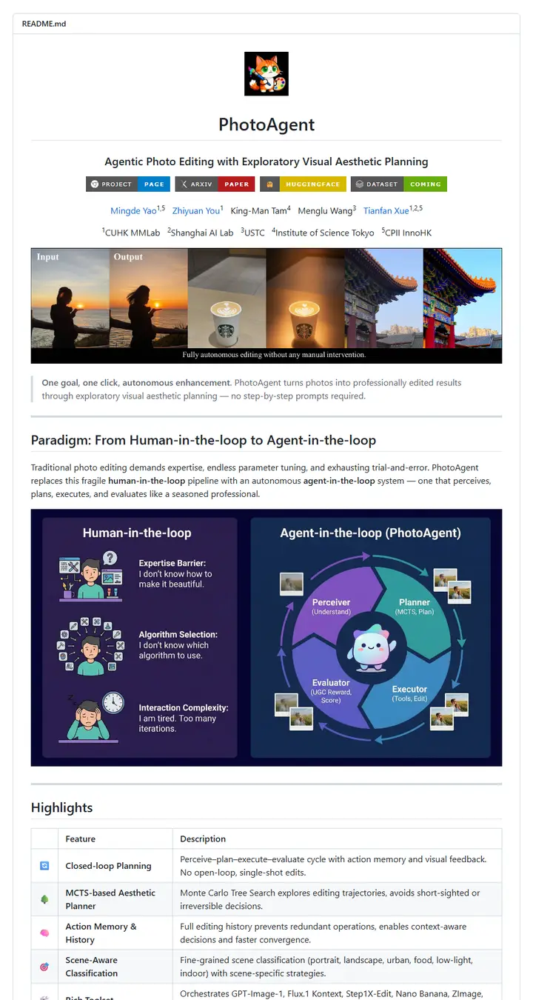

mdyao/PhotoAgent
An app-store listing for a research agent: a cartoon mascot tile, four chunky colored buttons, then a black filmstrip of before-and-after shots.

Checked against the rendered page. README never states ICML 2026 Oral; its subtitle and BibTeX title differ from the listed paper title ("Agentic Photo Editing with Exploratory Visual Aesthetic Planning", @article 2025, arXiv 2602.22809). Two badges link to #, GitHub strips the icon's border-radius, the ASCII diagram frame is misaligned, and about 10.7 KB of the 20 KB file is a hidden SEO keyword comment (mentions ICML 2025). Results tables lie below the tall capture; the iteration strip's horizontal scroll is inferred.
Why it is here
A small mascot logo, matching for-the-badge buttons and an input/output teaser strip give it a polished product feel, and the icon-led Highlights table and step table make the method easy to scan.
Overview
Header Block
Badge Colors
Section Outline
Guidelines
More like this